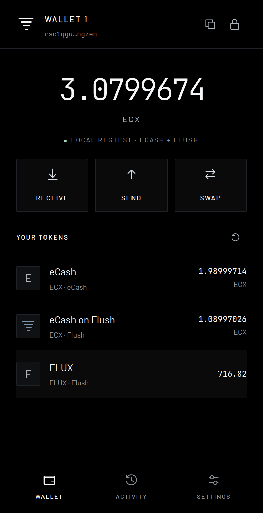
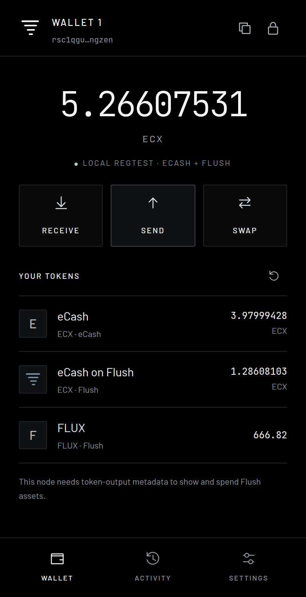
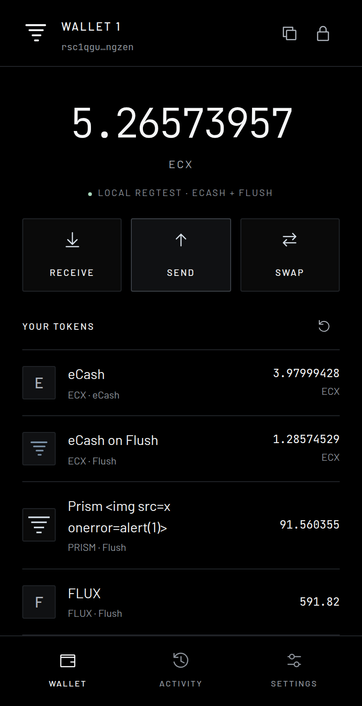
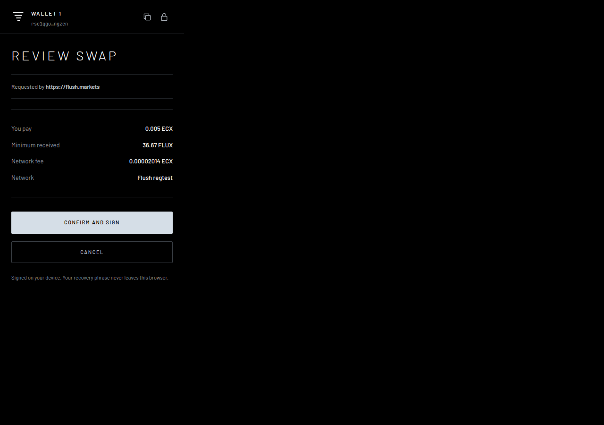
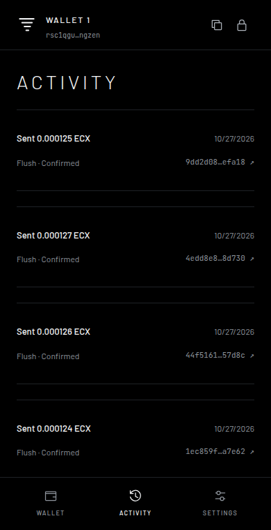
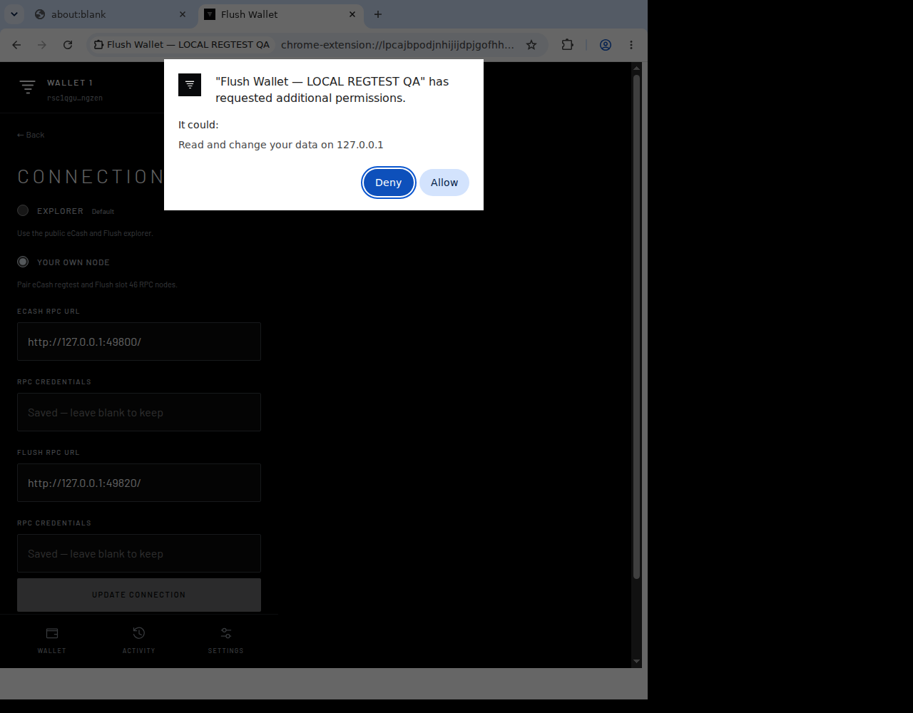

Wallet test results
Browser wallet v0.3.1 · 2026-10-27
Real funded transactions on local regtest, actual Chrome controls, and live public Explorer checks.
24 unit tests also passed. All temporary test nodes and the isolated display have been stopped.
Public-network limits
ecash address lookup
Address lookups cannot be used with bitcoind as backend.
Funded default-Explorer purchase and transfer
Fresh public test wallet has no test ECX; no signed public transaction has been broadcast.
The local transaction tests used generated coins, a Backbone mainchain and three Flush validators. The test copy changes network/address parameters and the regtest replay marker. The production wallet still refuses regtest nodes. Public checks did not perform a funded transaction.
Fixes made during testing
- Flush deposit credits use Flush's maturity rule, instead of L1's 100-confirmation rule.
- Approved transactions are recorded before submission, recovered after lost responses or worker termination, and kept during concurrent Activity refreshes.
- Expired approvals are refused; stale requests are cleared after worker termination; replay protection persists beyond browser session state.
- The site's cancelled-connection error is fixed in draft PR #1. That site change was tested locally and is awaiting upstream review.
Checks
Recovery, transfers and deposits7 passed
Real local nodes · Raw result ↗
Read recovery words from the existing funded wallet after password authentication
Evidence
{
"address": "rsc1qgux4y9sjclq8ql2505208c573dw8g07lrngzen"
}Restore a funded 12-word seed in a fresh Chrome profile
Evidence
{
"address": "rsc1qgux4y9sjclq8ql2505208c573dw8g07lrngzen",
"tokenUnits": "71682",
"nativeSat": "108997026"
}Receive native L1 ECX into the recovered browser wallet
Evidence
{
"txid": "493530d4859be43d9ce8a99c6fc2b48a1d3bd475c15fdb0b63957e3121cd62de",
"receivedECX": "2",
"address": "rchn1qp0xfmsxc2w3wr6vavhr7peuu365vf033p8749m"
}Send native ECX on ecash with confirmed change
Evidence
{
"txid": "cf1d632847de45eca267e782bf791a059d5e09999ef51c7aaddf4ee2a7bd19cb",
"amountECX": "0.01",
"feeECX": "0.00000286"
}Send native ECX on flush with confirmed change
Evidence
{
"txid": "c2d5a4d6f513460c4b895ec6db09eca422164938239ef8f397f8aaff1846638e",
"amountECX": "0.01",
"feeECX": "0.00000286"
}Deposit generated L1 ECX into the exact browser receive address
Evidence
{
"txid": "3987c66606365cc99a27e01fcab5c529f9bc3845dc42c657a12743615923b559",
"destination": "s46_rsc1qgux4y9sjclq8ql2505208c573dw8g07lrngzen_8d1119",
"receivedECX": "0.2"
}Sell FLUX back to ECX through the wallet
Evidence
{
"txid": "6b32f1f2a77098e38fced14976cb3fbd50b91e54d0801a1019c171f732fd6a2f",
"soldFLUX": "50",
"netReceivedECX": "0.00611363"
}Multiple assets and lost responses4 passed
Real local nodes + injected connection failure · Raw result ↗
Trade across two real pools into an asset with six decimal places
Evidence
{
"txid": "c0f1ee390383fcb3fa668ca444a8af102b520491294a9e5c9f64874ce8bbaef9",
"spentFLUX": "25",
"receivedPRISM": "30.484598",
"metadataEscaped": true,
"logoLoaded": true
}Reject malformed amounts and wrong-network recipients before signing
Evidence
{
"cases": 5
}Submit a minimum-denomination token transfer with exact token change
Evidence
{
"txid": "96bbb3e6a4cc482499f6273fd960ce71e2c07c2d7565c588e8f7422587726622",
"receivedUnits": "1"
}Keep a durable transaction record when the node accepts but the response is lost
Evidence
{
"txid": "b2587969d724d2345be27b5315d2b5fe760c9d0628c8585ca05ea9abae49988c"
}Recovery and signer security9 passed
Actual Chrome, real timers and worker termination · Raw result ↗
Cold installation keeps the encrypted funded wallet locked
Evidence
{
"address": "rsc1qgux4y9sjclq8ql2505208c573dw8g07lrngzen"
}Wrong password cannot unlock or change the vault
Evidence
{}Recovery reveal requires authentication and hides again after 30 seconds
Evidence
{
"hiddenAfterSeconds": 32
}Real two-minute auto-lock invalidates an outstanding transaction
Evidence
{
"elapsedSeconds": 129,
"noFundsMoved": true
}Secrets remain encrypted and never appear in RPC request bodies
Evidence
{
"vaultEncrypted": true,
"credentialsEncrypted": true,
"seedSent": false,
"passwordSent": false
}Service-worker termination locks the signer and preserves wallet data
Evidence
{}Full Chrome restart preserves both chain identities and requires unlocking
Evidence
{}Invalid recovery phrases cannot create a wallet
Evidence
{}Import a valid 24-word seed into both chain accounts
Evidence
{
"wordCount": 24
}Website connection and approvals10 passed
Actual site build + real local nodes; includes the proposed site fix · Raw result ↗
Reject a connection request from the actual website
Evidence
{
"fundsMoved": false
}Connect shares only a public address and grants no transaction authority
Evidence
{
"address": "rsc1qgux4y9sjclq8ql2505208c573dw8g07lrngzen"
}A website cannot request seed export or unsupported wallet methods
Evidence
{
"blocked": true
}Wrong-network and expired website requests are refused
Evidence
{
"cases": 2
}Approve an actual website-built trade and verify its on-chain receipt
Evidence
{
"txid": "ee6193f64d572e5fbca42c961a6f6cd5f0175b2e27a7c096c903ff718ca81426",
"actualSiteCode": true,
"actualNodeData": true
}Completed website transaction requests cannot be replayed
Evidence
{
"blocked": true
}A request that expires while its approval is open cannot be approved
Evidence
{
"expiredDuringReview": true,
"requestRejected": true
}A terminated approval worker does not leave a stale request blocking reconnection
Evidence
{
"interruptedRequestRejected": true,
"reconnectionSucceeded": true
}Replay protection survives clearing volatile browser session state
Evidence
{
"persistentReplayProtection": true
}Simultaneous website requests cannot open competing approval windows
Evidence
{
"approvalWindows": 1,
"requestsAccepted": 1,
"secondRequestRefused": true
}Chrome permissions and update4 passed
Actual Chrome dialogs on an isolated display · Raw result ↗
Actual Chrome permission denial keeps the prior connection
Evidence
{}Actual Chrome permission grant pairs real local nodes
Evidence
{}Switching back deletes RPC credentials and revokes real Chrome host access
Evidence
{}Unpacked extension update across Chrome restart preserves the encrypted wallet and locks the signer
Evidence
{}Interrupted and concurrent transactions10 passed
Real local nodes + controlled interruption tests · Raw result ↗
Closing a reviewed transfer does not send it
Evidence
{
"noFundsMoved": true
}Rapid double-click signs and broadcasts exactly one transaction
Evidence
{
"txid": "1ec859fba1dec43fd4b8b444c113d839484f0d9484075a228ea77b0862ba7e62",
"broadcasts": 1
}A connection change invalidates an approval already open in another window
Evidence
{}Offline errors stay visible and Settings remains reachable
Evidence
{}Missing resolved token metadata blocks token signing but permits native ECX funding
Evidence
{
"tokenSigningBlocked": true,
"nativeFundingAvailable": true
}A failed pre-submission connection can retry the same transaction without paying twice
Evidence
{
"txid": "44f51610eb0e133e2d216ee1c4e645d5ec9d36156b5c3541ed90ef7982657d8c",
"identicalRetry": true,
"receivedOnce": true
}Concurrent Activity refresh cannot erase a newly approved transaction
Evidence
{
"txid": "4edd8e8a2ac9a4d855070383316736a6cf8bb12187b837ee8dcf9533cdc8d730",
"preservedDuringConcurrentRefresh": true
}Worker termination after node acceptance preserves the outgoing transaction
Evidence
{
"txid": "9dd2d0859778956018bffa82d03bd40ab6d00146f8475a6a32bcd60bcd8efa18",
"confirmedAfterRestart": true
}A dust-sized native output is rejected without moving funds
Evidence
{
"nodeRejected": true,
"noFundsMoved": true
}The production RPC verifier refuses these local test nodes
Evidence
{
"productionNetworkGuardUnchanged": true
}Fees, pending transactions and slippage5 passed
Real local nodes and a real adverse price move · Raw result ↗
Receive an externally sent token into a wallet with no native coins
Evidence
{
"receivedFLUX": "1",
"nativeECX": "0"
}A token balance alone cannot pay the transaction network fee
Evidence
{
"noFundsMoved": true
}After topping up ECX, send the entire token balance with no token change
Evidence
{
"txid": "38798838f62f2b1c18f58922d1de6469567b04c8f7f66548c5ca4d7fc66752df",
"recipientFLUX": "1",
"senderFLUX": "0"
}Activity moves from pending to confirmed after real block production resumes
Evidence
{
"txid": "52695337f837b22b57e0b3a2da7fb6a0f3971cfe2cacba88f86b89766ac46941",
"pendingObserved": true,
"confirmedObserved": true
}A real price move cannot settle a swap below its approved minimum
Evidence
{
"nodeRejected": true,
"error": "RPC sendrawtransaction: ba-swap-price",
"noFundsMoved": true
}Public Explorer8 passed · blocked items
Live public API reads; invalid unsigned bytes safely refused · Raw result ↗
Verify the live Explorer network and slot
Evidence
{
"network": "ecashbeta",
"slot": 99,
"height": 22264,
"headers": 22264,
"syncing": false,
"mainchain_height": 974021
}Read and verify confirmed token outputs against parent transactions
Evidence
{
"address": "bflx1qzymftthcqlfrt9wywlfc7xz89vcqznyf5juv5a",
"outputs": 1,
"tokenUnits": "2238304577"
}Read real transaction history
Evidence
{
"transactions": 1
}Load real asset identity and a valid 256px token image
Evidence
{
"ticker": "FLUSH",
"decimals": 6,
"width": 256,
"height": 256
}Obtain a live quote with integer amounts and an enforced minimum
Evidence
{
"inputECX": "0.001",
"quotedFLUSH": 44.721408,
"minFLUSH": 44.274193,
"pools": [
"6e1ead05c56c42bf7be20de55a3ab44e824c32d5e229960b5d700fcd99c728fa"
]
}ecash address lookup
Evidence
{
"http": 405,
"error": "Address lookups cannot be used with bitcoind as backend.",
"url": "https://explorer.blockfab.org/betanet/api/address/bc1qcr8te4kr609gcawutmrza0j4xv80jy8z306fyu/utxo"
}ecash broadcast endpoint safely refuses invalid transaction bytes
Evidence
{
"http": 400,
"response": "{\"error\":\"sendrawtransaction RPC error: {\\\"code\\\":-4}\"}",
"fundsMoved": false
}flush address lookup
Evidence
{
"http": 200,
"url": "https://explorer.blockfab.org/betanet/flush/api/address/bflx1qzymftthcqlfrt9wywlfc7xz89vcqznyf5juv5a/utxo"
}flush broadcast endpoint safely refuses invalid transaction bytes
Evidence
{
"http": 400,
"response": "{\"error\":\"sendrawtransaction RPC error: {\\\"code\\\":-4}\"}",
"fundsMoved": false
}Funded default-Explorer purchase and transfer
Evidence
{
"address": "bflx1qvwgqgsq8g8mxjjvqgm7f6spcm0vj2vaaj7ftxr",
"balanceSat": "0",
"reason": "Fresh public test wallet has no test ECX; no signed public transaction has been broadcast."
}Actual browser captures
Tap a capture for the full-resolution image.






These results describe the tested flows and environments. The public L1 address service and public funded-flow blockers above remain unresolved.